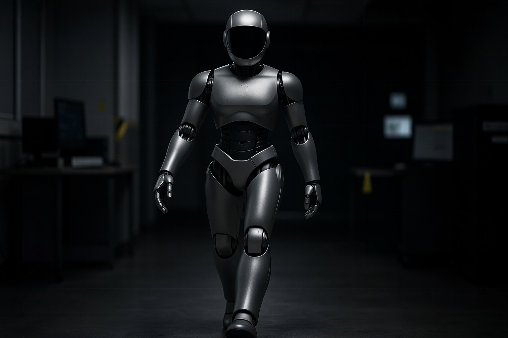

E1 · Bench ready
10 minRun the setup block. If course 0 already set up ~/fth, it only adds what's missing.
Done when: the block ends with unitree_rl_lab 4960b84 (2025-11-19) and mujoco 3.16.0 · onnxruntime 1.31.0 · torch 2.14.1+cpu.
Lesson 1 · 16 min
The Unitree G1 in this course walks because a neural network sends 29 joint targets every 20 ms. In this lesson you set up the bench, run the ready-made Unitree G1 gait policy in MuJoCo, watch the same robot fall without it, and see why classical control gave way to RL in massive simulation.
Start the lesson
Goal: run the ready-made G1 gait policy in MuJoCo, measure what it does, and compare it with the robot without a policy.
Click each block. The first three are the classical path; the last three are what the course practices.
MPC lives on as a concept and wherever a guarantee is required. The practice in this course is the right-hand column: simulation, policy and PD.
Click each stage.
The 29-degree-of-freedom Unitree G1 from MuJoCo Menagerie, pinned to commit 62ab00f (the same one as course 0). Position actuator with the policy's kp and kd.
Unitree publishes in unitree_rl_lab a G1 velocity policy already trained in Isaac Lab and exported to ONNX, with the deploy.yaml (joint order, kp and kd, default pose). Apache-2.0 license. The kit pins commit 4960b84.
Running in MuJoCo a policy trained in Isaac Lab already means crossing from one physics engine to another. Course 2 (sim2real) turns that into a gate.
Every 20 ms the policy reads the state and sends 29 targets; MuJoCo integrates at 500 Hz (2 ms step) with the PD holding each joint at its target.
andar_demo.py counts how many meters the pelvis walked and whether it fell (pelvis tilted more than 70° or below 0.3 m, the same criterion as the lesson 3 environment).
--sem-politica leaves only the PD holding the default pose. Nobody corrects the balance and the robot falls: what keeps the G1 upright while walking is the policy's closed loop.
If you did course 0, the venv and Menagerie are already there: the block only adds what's missing (onnxruntime, CPU torch, the policy). Pinned versions, tested on Oct 19, 2026.
F=${FTH:-$HOME/fth}; mkdir -p $F && cd $F
[ -d .venv ] || python3.12 -m venv .venv
. .venv/bin/activate && pip install -q mujoco==3.16.0 numpy pyyaml onnxruntime==1.31.0
pip install -q torch==2.14.1 --index-url https://download.pytorch.org/whl/cpu
[ -d locomocao ] || git clone -q --depth 1 https://github.com/linnoff88-dev/formacao-fth-locomocao-v72 locomocao
[ -d mujoco_menagerie ] || git clone -q --filter=blob:none --sparse https://github.com/google-deepmind/mujoco_menagerie
(cd mujoco_menagerie && git sparse-checkout add unitree_g1 && git checkout -q 62ab00f)
[ -d unitree_rl_lab ] || git clone -q --filter=blob:none --sparse https://github.com/unitreerobotics/unitree_rl_lab
cd unitree_rl_lab && git sparse-checkout set deploy/robots/g1_29dof/config/policy/velocity
git checkout -q 4960b84 && git log -1 --format='unitree_rl_lab %h (%ad)' --date=short
python3 -c "import mujoco, onnxruntime, torch; print('mujoco', mujoco.__version__, '· onnxruntime', onnxruntime.__version__, '· torch', torch.__version__)"unitree_rl_lab 4960b84 (2025-11-19) mujoco 3.16.0 · onnxruntime 1.31.0 · torch 2.14.1+cpu
Two lines and no errors. Pin the commits: a policy.onnx from another commit may have a different input order. torch comes from PyTorch's CPU wheels page (the course doesn't need a GPU).
ERRO: nêo achei /tmp/sem-bancada/unitree_rl_lab/deploy/robots/g1_29dof/config/policy/velocity/v0/exported/policy.onnx. Rode a preparaçêo da aula 1. saída: 1
The scripts look for everything in ~/fth, or in the folder set by the FTH variable. If the setup didn't run (or ran in another folder), the error shows the path that was missing.
10 s asking for 0.7 m/s forward. It exits with 0 if it didn't fall, 1 if it fell.
F=${FTH:-$HOME/fth}; cd $F/locomocao && . $F/.venv/bin/activate
python3 kit/andar_demo.py --vx 0.7 --s 10; echo "saída: $?"F=${FTH:-$HOME/fth}; cd $F/locomocao && . $F/.venv/bin/activate
python3 kit/andar_demo.py --vx 0.7 --s 10 --sem-politicaF=${FTH:-$HOME/fth}; cd $F/locomocao && . $F/.venv/bin/activate
python3 kit/andar_demo.py --vx 1.0 --s 10 | tail -3política: unitree_rl_lab velocity v0 (ONNX) · 480 → 29 · 50 Hz comando: vx = 0.7 m/s por 10 s · simulaçêo a 500 Hz, política a 50 Hz andou: 6.6 m para a frente · desvio lateral: 0.5 m · velocidade média: 0.66 m/s altura final da pelve: 0.77 m caiu: nêo saída: 0
6.6 m in 10 s (0.66 m/s for the 0.70 requested) and the pelvis ends at 0.77 m. The 0.5 m lateral drift is normal: nothing corrects the heading, only the speed.
política: nenhuma (só PD na pose padrêo) comando: vx = 0.7 m/s por 10 s · simulaçêo a 500 Hz, política a 50 Hz andou: 0.8 m para a frente · desvio lateral: 0.0 m · velocidade média: 0.57 m/s altura final da pelve: 0.33 m caiu: sim, em t = 1.4 s
The robot falls at 1.4 s. The "average speed" of 0.57 m/s here is the body tipping forward, not walking: always read the speed together with caiu.
andou: 9.0 m para a frente · desvio lateral: 1.2 m · velocidade média: 0.90 m/s altura final da pelve: 0.76 m caiu: nêo
9.0 m in 10 s. 1.0 m/s is the forward-speed ceiling the policy was trained for (the unitree_rl_lab command range: −0.5 to 1.0 m/s).
See the policy work before you open up the parts.
Run the setup block. If course 0 already set up ~/fth, it only adds what's missing.
Done when: the block ends with unitree_rl_lab 4960b84 (2025-11-19) and mujoco 3.16.0 · onnxruntime 1.31.0 · torch 2.14.1+cpu.
Run the policy at 0.7 m/s for 10 s and note how many meters the pelvis walked.
Done when: python3 kit/andar_demo.py --vx 0.7 --s 10; echo "saída: $?" → caiu: nêo and saída: 0.
Run with --sem-politica and write, in one sentence, what keeps the robot upright when it walks.
Done when: the output shows caiu: sim, em t = 1.4 s; your sentence says it's the policy's closed loop (PD alone doesn't correct balance).
The explanation appears after your answer.
Question 1 of 3
What does the G1's gait policy deliver every 20 ms?skill
Question 2 of 3
Without a policy, the robot "walked" at 0.57 m/s and fell at 1.4 s. How do you read that number?
Question 3 of 3
What did Figure report about Helix 02, in January 2026?
Choose an option. The explanation appears after you try.